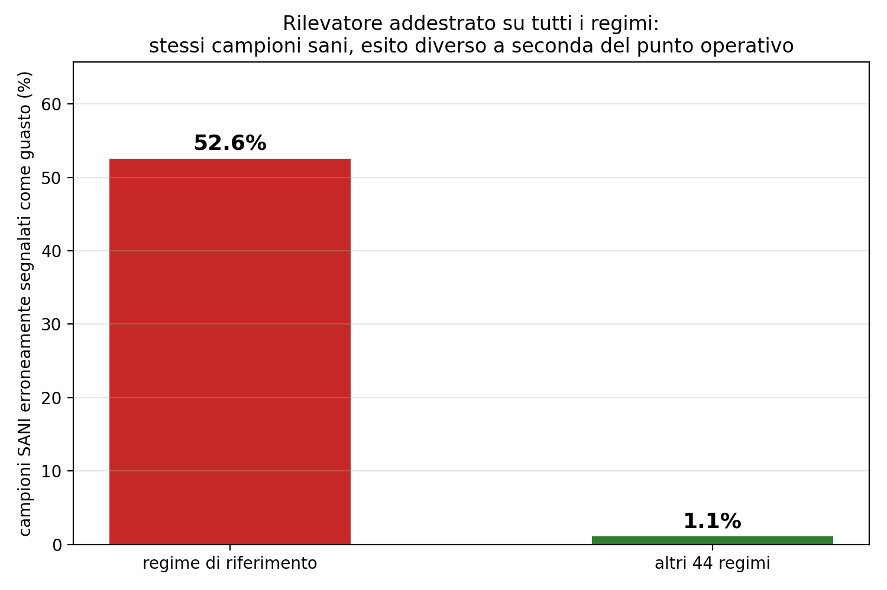

Data & AI
Fault diagnosis in a multiphase process
Detecting anomalies while checking that a model is not learning the wrong shortcut.
01
Overview
An experimental water–air plant reproduces aspects of multiphase transport through an ejector. My study uses its public recordings to detect abnormal operation and distinguish three fault types.
The central challenge is separating the physical signature of a fault from the operating regime: in this dataset, all fault recordings were collected at just one operating point.
02
Requirements & constraints
Measurements are continuous time series sampled at 10 Hz. Randomly distributing adjacent samples across training and test sets would produce an overly optimistic evaluation.
The public dataset contains 67 recordings: 46 nominal recordings across 45 operating regimes and 21 fault recordings. The study selects water-inlet obstruction, air-outlet obstruction and an air leak, each at one severity level.
Detection and fault identification must be evaluated separately, and the operating-regime shortcut must be explicitly checked.
03
My contribution
I developed the diagnostic analysis: dataset inspection, temporal partitioning, model comparison and error interpretation. The study uses public measurements from an experimental water–air ejector.
04
Approach & decisions
Eight sensor readings and internal signals from three PID controllers form the inputs. Two nearly constant variables are removed, leaving 27 features.
The main evaluation partitions recordings into ten-second blocks and discards samples at their boundaries to preserve a two-second temporal gap. A consecutive-window split provides a separate robustness check.
A regime-conditioned Random Forest is compared with a global model trained across operating regimes. Binary detection and multiclass diagnosis use the same evaluation split; Local Outlier Factor is tested as a one-class alternative.
The analysis examines how the operating point can be reconstructed from controller signals. Feature importance, confusion matrices and the LOF score behavior help explain why different approaches succeed or fail.

05
Results & validation
The report summarizes multiclass accuracy at approximately 97% for the regime-conditioned model in the main evaluation.
At the alarm threshold selected on validation data, the conditioned detector identifies 502–515 of 523 anomalous test samples across three training seeds, with zero false alarms among 798 nominal samples.
The corresponding global detector misses 163–171 anomalous samples and produces 49–58 false alarms. This comparison illustrates the cost of treating operating-regime variation as fault evidence.
LOF did not support the original hypothesis: the selected fault states were locally more compact than nominal states. The negative result is part of the study, rather than an omitted experiment.
06
Limitations & next steps
Training and test intervals come from the same available fault recordings. The evaluation does not establish generalization to an independent repetition of a fault.
Results cover three selected fault–severity combinations at the reference operating regime. They are not performance guarantees for other regimes, all severities or an industrial deployment.
The archive contains multiple drafts and summaries. Numerical claims here follow the final report and its stated alarm evaluation; different threshold metrics should not be mixed.
07
Resources
Further project material will be added to this case study.